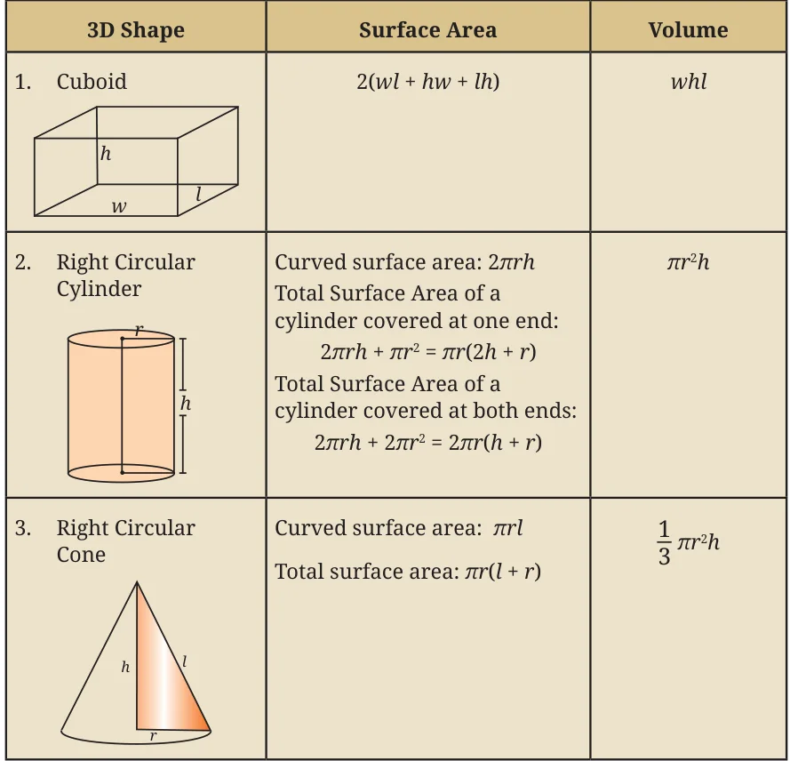
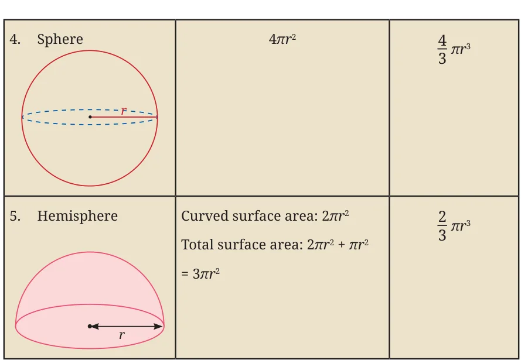

In this chapter, we have studied the following formulas for the surface areas and volumes of various fundamental shapes.


Chapter 14 · Math of Space Surface Area and Volume
In this chapter, we have studied the following formulas for the surface areas and volumes of various fundamental shapes.

